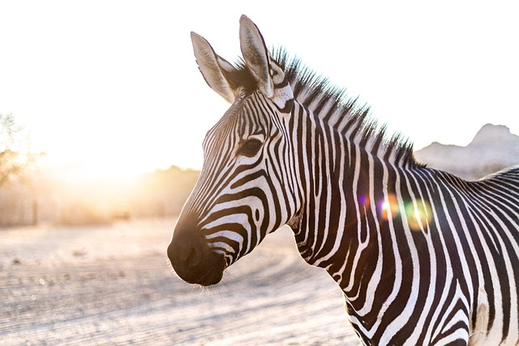

Zebra
Zebra to afrykański koń o charakterystycznym czarno-białym lub brązowo-białym pręgowanym futrze, z dużą głową, muskularną szyją i pyskiem przypominającym koński. Jest to ssak roślinożerny, żyjący w stadach, osiągający prędkość do 70 km/h i zamieszkujący głównie tereny sawann.